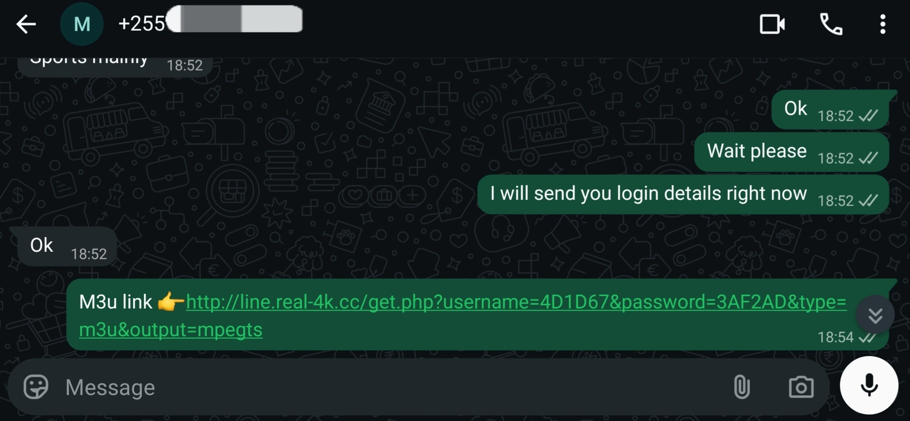
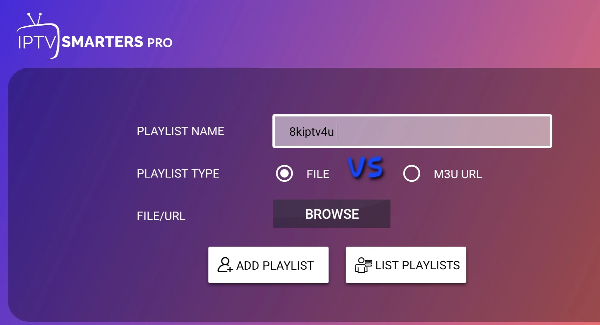
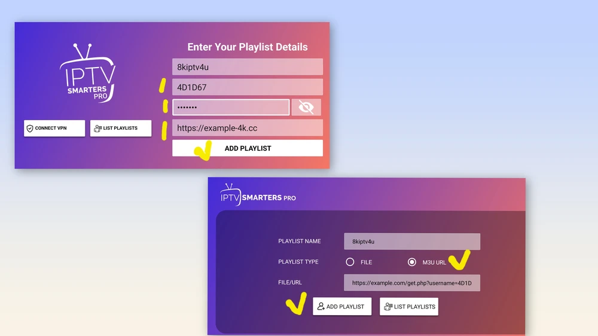
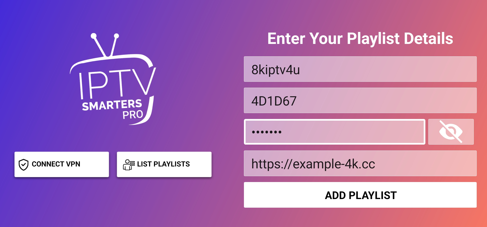

What Is an M3U Playlist? Complete Beginner's Guide

An M3U playlist is a simple text file that lists streams. IPTV players read it to build your channel list. Understanding the format makes it easier to fix problems and keep your access secure.
What is inside an M3U file
Each entry has a descriptive line followed by a stream address. A minimal example looks like this:
#EXTM3U
#EXTINF:-1 tvg-id="news1" group-title="News",Example News
https://example.com/stream/news1.m3u8The first line identifies the file type. The EXTINF line carries the channel name, group and optional guide ID. The next line is the stream address.
M3U link vs file
A link lets the player download the latest list each time. A file is a static copy on your device or storage.

M3U vs Xtream-style login
- M3U: one URL holds everything.
- Xtream-style: separate server, username and password that the app uses to request channels and the guide.
Both appear in players like IPTV Smarters and TiviMate.

How to load a playlist
- Open your player and choose add playlist.
- Select the URL or file option.
- Paste or choose your source.
- Wait while it imports.

Keep your playlist private
Your link often contains your credentials. Do not post it publicly or share it with people you do not trust.
Common problems
A link with a typo, an expired account or a very large list can load slowly. See the buffering guide and the overview in what IPTV is.
Frequently asked questions
Is an M3U file a video?
No. It is only a list of addresses that tell a player where to find streams.
Can I edit an M3U file?
Yes, with a text editor, but changes to a hosted link will not save back to the provider.
What does EPG mean?
Electronic programme guide. It is the schedule data that shows what is on each channel.